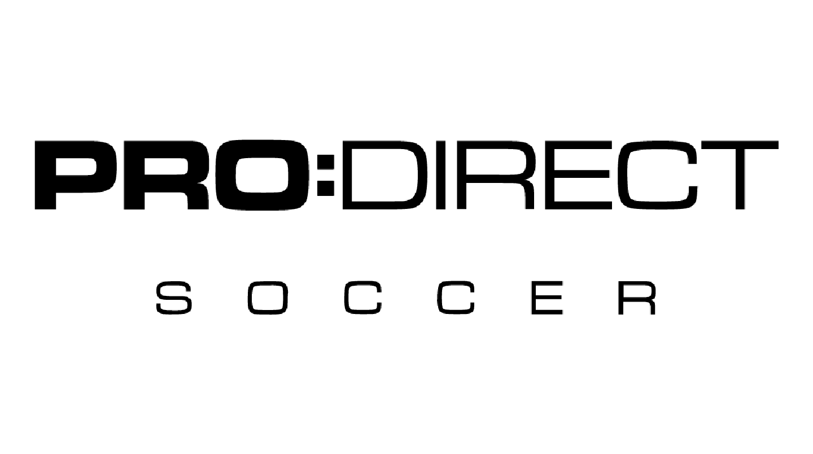
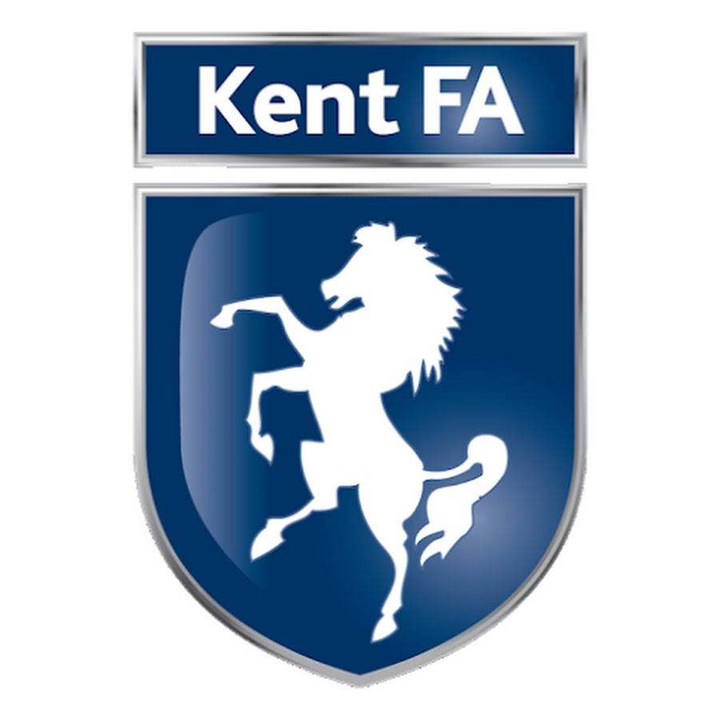
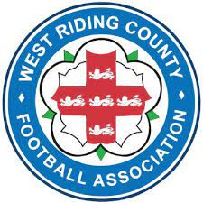
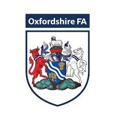
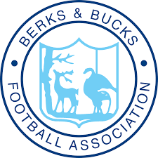
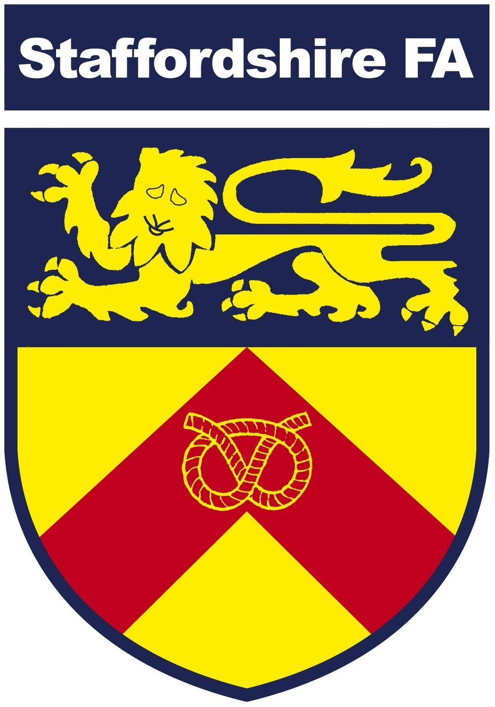

In Partnership With








Neymar da Silva Santos Júnior (born 5 February 1992), known as Neymar, is a Brazilian professional footballer who plays as a forward for Ligue 1 club Paris Saint-Germain and the Brazil national team.

Lionel Andrés Messi[note 1] (Spanish pronunciation: [ljoˈnel anˈdɾes ˈmesi] (About this soundlisten);[A] also known as Leo Messi,[8] (born 24 June 1987)

Cristiano Ronaldo dos Santos Aveiro GOIH ComM (Portuguese pronunciation: [kɾiʃˈtjɐnu ʁɔˈnaɫdu]; born 5 February 1985) is a Portuguese professional footballer who plays as a forward for Serie A club Juventus

Paulo Exequiel Dybala (born 15 November 1993) is an Argentine professional footballer who plays as a forward for Serie A club Juventus and the Argentina national team.

Mesut Özil (German pronunciation: [ˈmeːzut ˈøːzil], Turkish: [meˈsut œˈzil]; born 15 October 1988) is a German professional footballer

Mauro Emanuel Icardi (Spanish pronunciation: [ˈmawɾo emaˈnwel iˈkaɾði]; born 19 February 1993) is an Argentine professional footballer

Ángel Fabián Di María (born 14 February 1988) is an Argentine professional footballer who plays for Ligue 1 club Paris Saint-Germain and the Argentina national team.

Kylian Mbappé Lottin (born 20 December 1998) is a French professional footballer who plays as a forward for Ligue 1 club Paris Saint-Germain and the France national team.

Considered one of the best players in the world,[6][7] he is known for his finishing, dribbling, and speed.

Regarded as one of the best strikers in the world, Kane is known for his prolific goalscoring record and ability to link play.[

De Bruyne began his career at Genk, where he was a regular player when they won the 2010–11 Belgian Pro League.

e is known for his combination of vision, passing, dribbling and ability to conjure curving long-range strikes